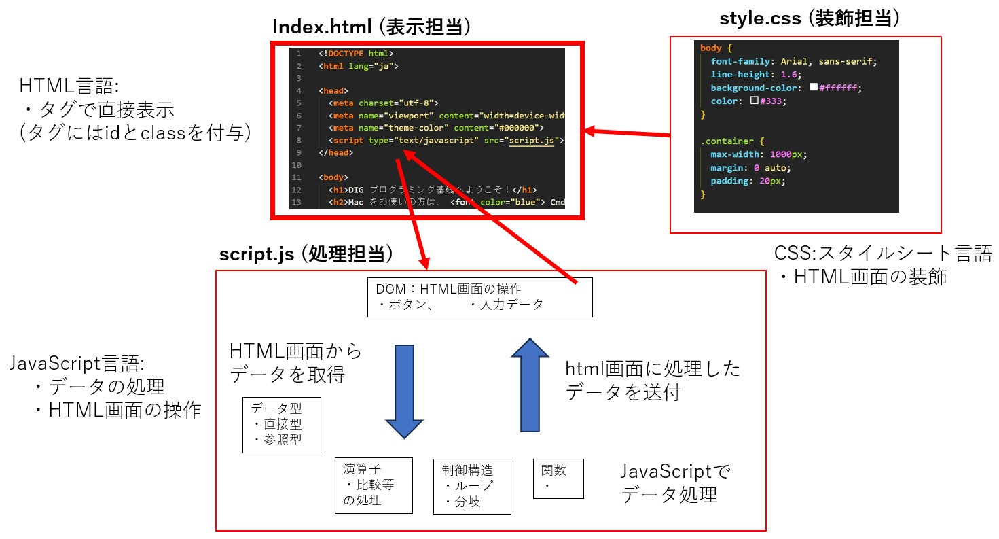

12_shoji_hishinuma/FND29 最終プレゼン
今回の講座で習ったこと

出来ること
- ブラウザからデータの取得が可能(.html ⇒.jsファイル)
- データを加工してブラウザに表示も可能(.js⇒.htmlファイル)
- ブラウザ(Chrome等)さえあればこれらのファイルで実行可能(特殊なソフト不要)
今回作ったWebページ：英文のOCR読み込みと英単語の出現回数とその難易度を表示するサイト (CSVに保存可能)
- 単語の出現回数と単語の難易度を知りたい英文ファイルを準備(画像でOK)
- 画像ファイルを読み込む(Tesseract社製OCRエンジンを使用)
-
テキスト化した英文を単語に分割して出現回数をカウントし、難易度ベースリスト(JACET8000)の難易度と照合し、表示する。